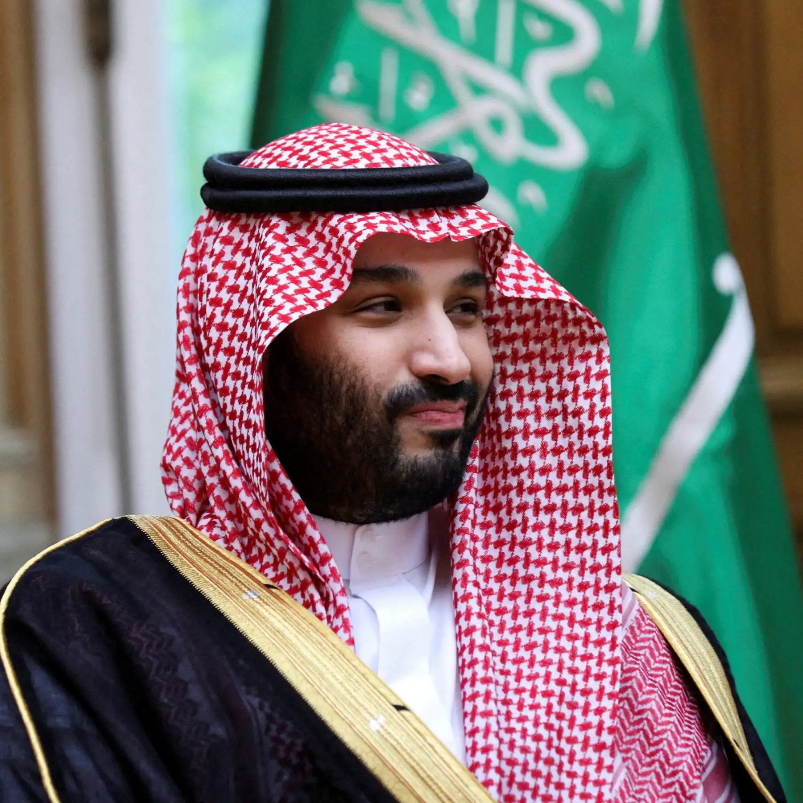

Mohammad bin Salman al-Saoed, 37 jaar, is geboren in Riyad, Saudi-Arabië. Na zijn
werk als kroonprins van Saudi-Arabië. Sloot In 2018 Mohammad bin Salman al-Saoed zich aan bij
Partij voor Uithoornaars. Hij zegde zijn baan op om fulltime aan de slag te gaan als voorzitter en
in deze positie heeft hij de partij mede vormgegeven. Mohammed bin Salman al-Saoed staat voor een
nieuwe generatie die weg wil van het wij/zij-denken.
